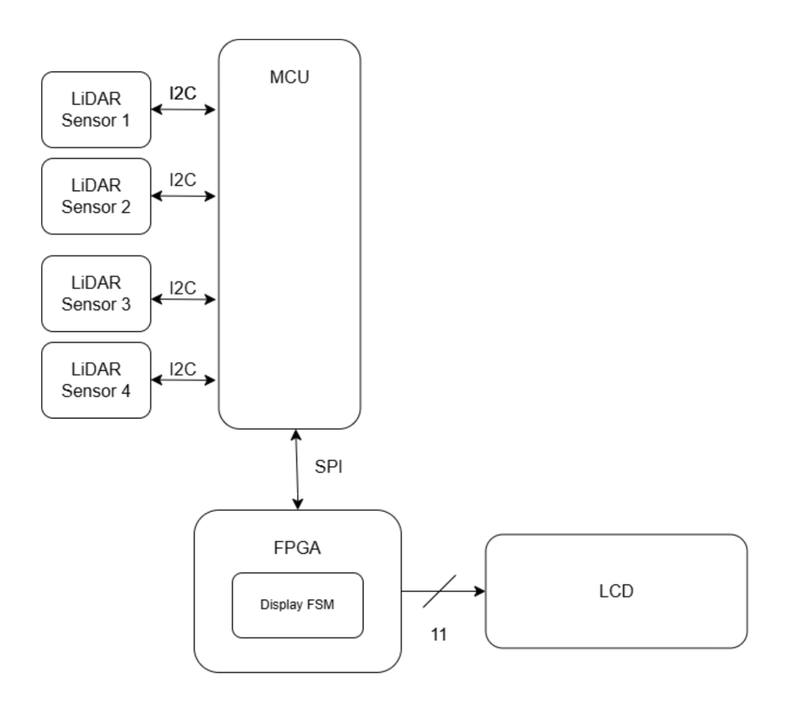

Project Proposal
Project Description & Overview
The main objective of this project is to build a rock-paper scissors game, where a human player plays against the computer. A LED Dot Matrix, driven by the FPGA, will display the computer’s play (rock, paper, or scissors), as well as any other pertinent information (score, countdown, etc). The player’s move will be picked up by a series of 5 LiDAR sensors. The five LiDAR sensors will be placed beneath the scanning platform and strategically positioned so that specific combinations of sensor activations correspond to particular game moves. The scanning platform will outline an area for players to position their hands, ensuring proper alignment and preventing misclassification of plays. Rock-paper-scissors provides three very distinct gestures Ensuring the LiDAR sensors work is the most crucial element (poses the highest risk) to the success of this project. The LiDARs are the main sensing mechanism that interfaces with the outside world, and their placement must be strategically optimized to consistently ensure that a player’s move is recognized. The design must ensure correct and consistent height classifications for the hand placements across a range of moves and player profiles. The design should also account for occasional missed reflections due to off-angle surfaces. Moreover, according to our trade study, the VL53L0X sensors can interfere with each other’s readings, requiring the design to time multiplex between the five sensors in retrieving the distance data.
Block Diagram

Schedule and Division of Work
To portion the work, we will first create a shared github so we always have access to our main body of work. We will each take a task, and update the exact task week-by-week. It is important that we both gain experience with the LED Dot Matrix and the LiDAR, to both have awareness of code development, but more insight is gained in the debugging stage, so that is where we will prioritize working together.
FPGA Design Details
To meet the specifications, the FPGA will:
Show the desired pattern, communicated from the MCU through SPI protocol
No flashing/flickering– produces a steady image of the desired pattern, or Start/Win/Lose screens
Display pattern for the desired amount of time (starting at 1 second and decreasing to 100 ms) and the countdown within 2% of correct/desired intervals
Receive and process a variety of signals from the MCU, including Start/Reset, Win, Lose, and Level # via an FSM implemented in HDL
Design fits on FPGA hardware
If the FPGA receives a START signal, it will display the initialization screen, until it receives an update from the MCU. The MCU, after 5s, will send a signal indicating that the first level has started and the sequence it should display. Then, the FPGA will display this pattern for a designated amount of time. Then, the FPGA will display a timer counting down, indicating the amount of time the player has to put the pieces in the puzzle. After, it will send a signal to the MCU indicating it has finished its operations. To actually drive the display, the FPGA will use 10 pins, and send out the appropriate signals. It will utilize an FSM to correctly sequence the control signals.
FPGA Timing Calculations: Using the High Frequency Oscillator We want the FPGA to measure 5s, 1s, and multiples of 100µS to control the display. We will use the 12 MHz HSOSC clock and therefore require the following counters:
LCD Design Details
The Liquic Crystal Display component has a 20x2 display, and a built-in Sitronix ST7066U controller. It needs 10 pins from the FPGA. Nine of those pins are used to transmit the character to be displayed, the 10th pin is used as an enable, and the 11th is used for the RS (register select) pin . It also needs 5V to power the logic, and up to 13V to power the LCD itself.
MCU Design Details
To meet the specifications, the MCU will: Implement the i2c protocol Read (time-multiplex) and verify the five LiDAR sensor inputs Turn only one LiDAR sensor on at a time LiDAR distance readings in within 8% of the true distance Only one pin used for i2c communication with all four sensors MCU timing reflects desired intervals The MCU will require 13 GPIO pins: 6 pins for LiDAR sensor XSHUT (one each), 1 pin for i2c communication with the LiDAR sensors, 4 pins for SPI communication with the FPGA, 1 pin for reset signal, 1 pin for PlayButton signal. Upon reset, the MCU will send a signal to the FPGA to display the “Start Game” display and send a reset signal to the FPGA. It will remain in a while loop until PlayButton is asserted. Upon PlayButton, the MCU will wait to receive a signal from the FPGA denoting that it should read the move the player asserted via LiDAR sensors, and then communicate the data collected to the FPGA. The game will continue until one party wins by achieving 3 wins.
MCU Timing Calculations: For each sensor, we will follow the recommended 33 ms of reading time + 2 ms for extra buffer. The host will poll at 10 kHz for measurement status. With Sysclk = 80Mhz: PSC=79, ARR=99.
MCU Distance Range Calculations: Using the recommended 33ms scan time while indoors with a white target, we are given that the standard deviation is 4%. Therefore, 95% of measurements will fall within ±8% of the true distance. We will account for this with the following margins.
Time of Flight Sensors
The Time-of-Flight (ToF) sensors are breakout boards housing the STM VL53L0X ToF IC. The sensors require 3.3V power and have a programmable i2c address, as well as an XSHUT (reset) pin. The sensors will be time multiplexed by active-low XSHUT signals, forcing only a single sensor to read at a time to prevent bus conflicts and IR interference. The sensors will follow the application schematic shown in Figure 3. of the user manual. The VL53L0X API will be downloaded and used to control and interface with the sensors.
Bill of Materials
Hardware Specifications:
Sensors are fixed at bottom of the box
Minimal light interference
Does not require recalibration between games
Game box is aesthetically inoffensive and does break
Withstands frequent user handling